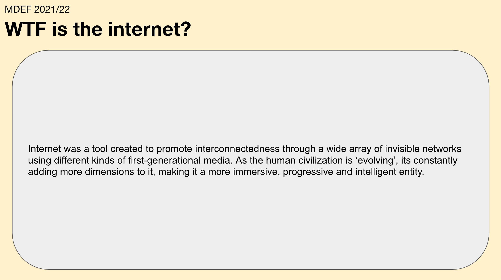
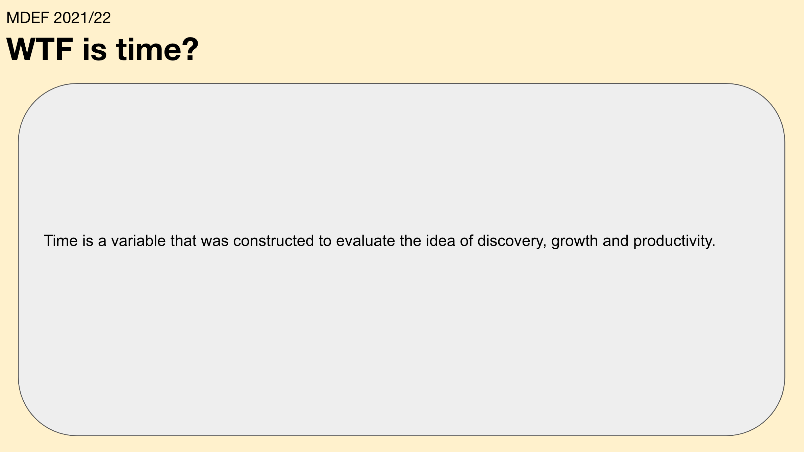

Futures but not future, because futures come in ‘plurality’. Futures to be invented and the futures to be utilised, to vocalise realities and truths of many.
The module turned out to be one of the most fun, introspective and speculative times, after weeks of saturation with information and data. Funnily enough, 4 months since inception, this was the first module to question us individually about what the word 'future' means to us. What will our lives actually look like One Billion Seconds from now? Envision what my future jobs might look like was an interesting approach into speculating how AI and technology driven economies are actually pushing us away everyday from being more human. I instead chose optimism and listed the following careers for myself: Plant Nanny, Plant-based Protein Farmer, Space trash Collector or a Cross-specie Therapist. You can find the entire exercise here.
Instead of just speculating in the future, we even went back in time. In simple words, the activity was an emotional mess. The task was to write a post-card to someone one billion seconds in the past. The interesting observation from the activity was that most of the participants chose to write letters to their grand-parents.
I chose to write a post-card to my grandfather who served in the Indian army during the Siachin border conflicts, soon after the ghastly India-Pakistan partition. Serving in the army also brings in a lot of regrets alongside pride and patriotism. I wrote to him in hope of kindness and compassion towards at least a few of the 1 million lives that were lost. I wrote to him in the hope of witnessing a peaceful Kashmir someday.
Two questions from the module that made me think deeper about my impact and place on this planet were 'WTF is the Internet?' and 'WTF is time even?'.

Using The Everything Manifesto as a meta-brief, we had the opportunity to learn how to use hypothetical questions to develop useful fiction stories about how everyday life can change in the next billion seconds. The first few exercises brought me back to my roots in creative writing when I wrote my first piece of fiction titled Quentorium. An imaginary city of Wakanda was envisioned to host the 5G Global Earth Summit one billion seconds from now in 2052. The location that was chosen to support the back-end research for the activity was Madagascar. The exercise helped in speculating and addressing the Environmental urgencies, socio-political withdrawals, the future of Energy and Currency in a highly retrospective fashion. You can find the brief research here.